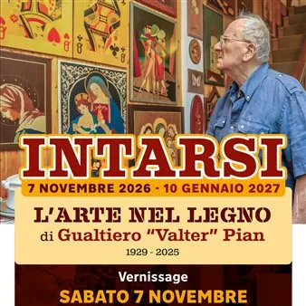

da sab 7 nov a dom 10 gen
INTARSI – L’arte nel legno di Gualtiero ‘Valter’ Pian
Dal 7 novembre 2026 al 10 gennaio 2027, Casa Candussi Pasiani, in piazza Garibaldi 6 a Romans d’Isonzo, ospiterà “INTARSI – L’arte nel legno di Gualtiero ‘Valter’ Pian”, una mostra dedicata all’ebanista romanese scomparso nel 2025, che con la sua maestria ha saputo portare il…
 Indicazioni
Indicazioni
- Costi e prenotazioni
- Costo non indicato · Prenotazione non indicata
- Programma
- Programma da verificare. Apri la fonte ufficiale per orari e possibili aggiornamenti.
- In caso di maltempo
- Nessuna indicazione specifica pubblicata.
- Note
- Acquisito automaticamente dalla fonte.
L’EVENTO
Descrizione completa
Dal 7 novembre 2026 al 10 gennaio 2027, Casa Candussi Pasiani, in piazza Garibaldi 6 a Romans d’Isonzo, ospiterà “INTARSI – L’arte nel legno di Gualtiero ‘Valter’ Pian”, una mostra dedicata all’ebanista romanese scomparso nel 2025, che con la sua maestria ha saputo portare il nome del paese anche fuori dai confini regionali. L’inaugurazione si terrà sabato 7 novembre alle ore 18.00.
Le sue opere, frutto di una straordinaria abilità nella lavorazione e nell’intarsio del legno, sono state esposte in diverse prestigiose sedi ed eventi in Italia. Tra le più significative, la croce in legno intarsiato raffigurante “Il ciclo dell’infanzia di Gesù”, fedele riproduzione della croce smaltata di papa Pasquale I del IX secolo, conservata nei Musei Vaticani. Realizzata nel 2009, l’opera colpì l’allora presidente del Consiglio regionale Edouard Ballaman, che ne volle l’esposizione nella sala del Consiglio regionale a Trieste, dove ancora oggi si trova accanto al grande quadro di Giuseppe Zigaina.
Anche dopo la sua scomparsa, il legame artistico con il Consiglio regionale si è rinnovato: nel dicembre 2025 un suo presepe in legno intarsiato è stato esposto nell’ambito della rassegna “Presepi FVG 2025 – La tradizione che prende forma”, curata dal Comitato regionale delle Pro Loco, per poi essere donato dalla moglie al Consiglio regionale tramite il presidente Mauro Bordin.
Pian ha partecipato più volte anche alla manifestazione nazionale “Presepi d’Italia” a Massa Martana, in provincia di Perugia. Accanto alla sua attività artistica, si è sempre distinto per la disponibilità nel trasmettere la propria passione alle nuove generazioni, incontrando gli studenti delle scuole locali e collaborando con associazioni e Comune.
Il suo impegno è stato riconosciuto anche dalla comunità romanese: nel 2009 il Circolo Mario Fain e il gruppo di ricerca I Scussons gli hanno conferito il “Premio al lavoro, all’arte e alla professionalità”, mentre nel dicembre 2022 il Comune gli ha assegnato il premio “Cûr e Pais”.
L’esposizione resterà aperta fino al 10 gennaio 2027: il lunedì dalle 17.30 alle 19.30, il martedì, mercoledì e venerdì dalle 15.00 alle 18.00, il giovedì, sabato e domenica dalle 10.00 alle 12.00.
IL PROGRAMMA
Programma e orari
Appuntamenti raccolti dalle fonti elencate. Dove manca un orario, non è ancora disponibile in questa scheda.
Programma pubblicato
- Dal 2026-11-07 al 2027-01-10
INFORMAZIONI UTILI
Prima di partire
- Controllare la fonte prima di partire.
ORGANIZZAZIONE